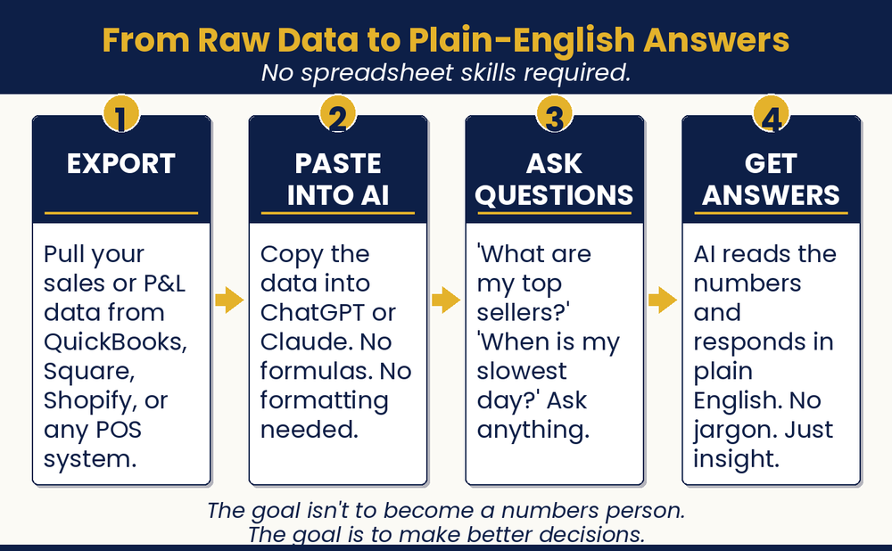

Chapter 12 — Know Your Numbers
Make Financial Decisions like a CFO
Will I make payroll next month?

Chapter Recap
Many owners avoid their numbers because they feel confusing. AI makes them simple. Paste in your sales or expense data and ask plain questions. It will explain your profit, your costs, and anything that looks off. This chapter shows you five key numbers to watch and a quick Monday routine. When you know your numbers, you spot trouble early and make better calls. Never type private customer or bank details into AI.
Note: These prompts help you understand your own numbers. They are not financial advice. Check important decisions with a qualified accountant or bookkeeper. Never paste customer names, account numbers, or other sensitive data into AI.
In This Chapter
- AI as Your Personal Analyst
- Your Five Most Important Numbers
- Connecting Your Business Tools
- The 15-Minute Monday Morning Numbers Ritual
- Spot Trouble. Prevent a Crisis.
Grab-and-Go Prompts
1. Uncover Questions You’re Not Asking — add to any data session
What questions should I be asking about this data that I’m not asking? [paste your data]
2. Top Profitability Priorities — get a short action list
Based on these numbers, what are the two or three most important things I should focus on to improve profitability? [paste data]
3. Analyze Your P&L — paste your Profit and Loss
Analyze this P&L. Where are my biggest expenses relative to revenue? Are there any cost categories unusually high? What is my net profit margin, and how does it compare to a typical small business in [your industry]?
4. Monday Morning Check — a two-minute weekly habit
Here are last week’s numbers for my business: [numbers]. What do these tell me about last week’s performance? Flag anything I should pay attention to.
5. Your Five Key Metrics — a plain-English snapshot
Calculate my five key business metrics from this data: total revenue, gross margin if determinable, average transaction value, any patterns in timing, and any unusual items I should notice. Give me a plain-English summary.
Download
- 📄 Financial Data Prompt Pack — ready-to-use prompts for QuickBooks, Shopify, Square, and any CSV, plus a Five Key Numbers worksheet.
Your Move
Export last month’s sales or financial data from whatever system you use. Open Claude or ChatGPT. Paste the data and ask: “Calculate my five key business metrics from this data: total revenue, gross margin if determinable, average transaction value, any patterns in timing, and any unusual items I should notice. Give me a plain-English summary.” Use what you learn to set one specific goal for next month.

Read the full chapter in
AI Jiu-Jitsu: Run Circles Around the Big Guys, the book this toolbox comes from.
Prefer to have it set up for you? BreakThru Growth offers AI coaching and done-for-you setup for small businesses → BreakThruGrowth.com